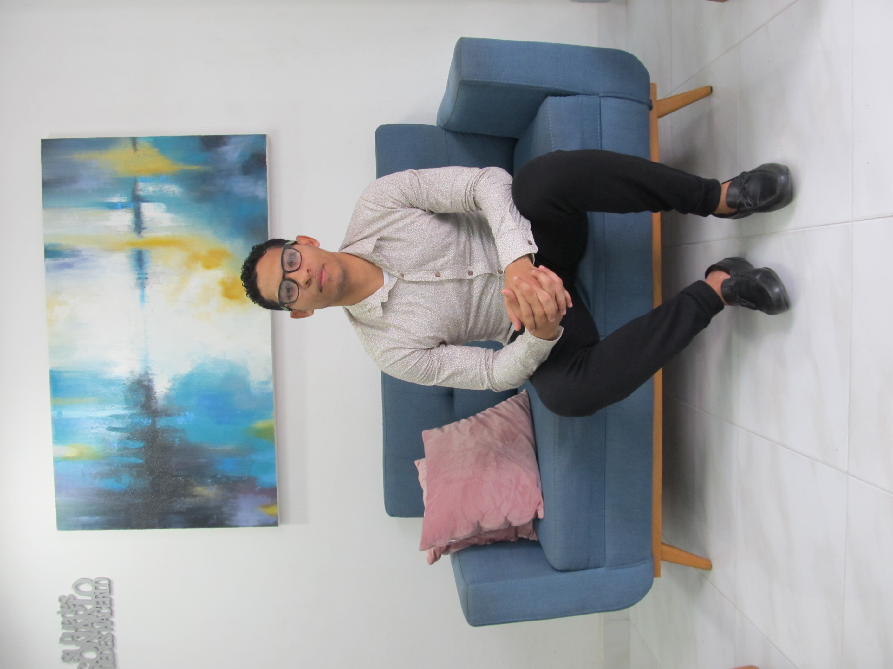

Who Am I?

My name is Marco Antonio Fernández Acosta. I am from Cartagena and
Adso student.

I am currently pursuing a technologist degree in software
analysis and development.
I consider myself a committed, responsible, and self-taught
person, focused on constant personal and professional growth.
I am passionate about technology, innovation, and the impact
of software development on improving people`s lives.